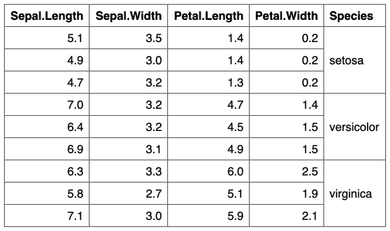
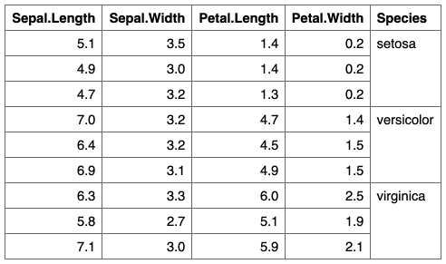

| valign {flextable} | R Documentation |
change vertical alignment of selected rows and columns of a flextable.
valign(x, i = NULL, j = NULL, valign = "center", part = "body")
x |
a flextable object |
i |
rows selection |
j |
columns selection |
valign |
vertical alignment of paragraph within cell, one of "center" or "top" or "bottom". |
part |
partname of the table (one of 'all', 'body', 'header', 'footer') |


Other sugar functions for table style:
align(),
bg(),
bold(),
color(),
empty_blanks(),
fontsize(),
font(),
highlight(),
italic(),
line_spacing(),
padding(),
rotate()
ft_1 <- flextable(iris[c(1:3, 51:53, 101:103),]) ft_1 <- theme_box(ft_1) ft_1 <- merge_v(ft_1, j = 5) ft_1 ft_2 <- valign(ft_1, j = 5, valign = "top", part = "all") ft_2